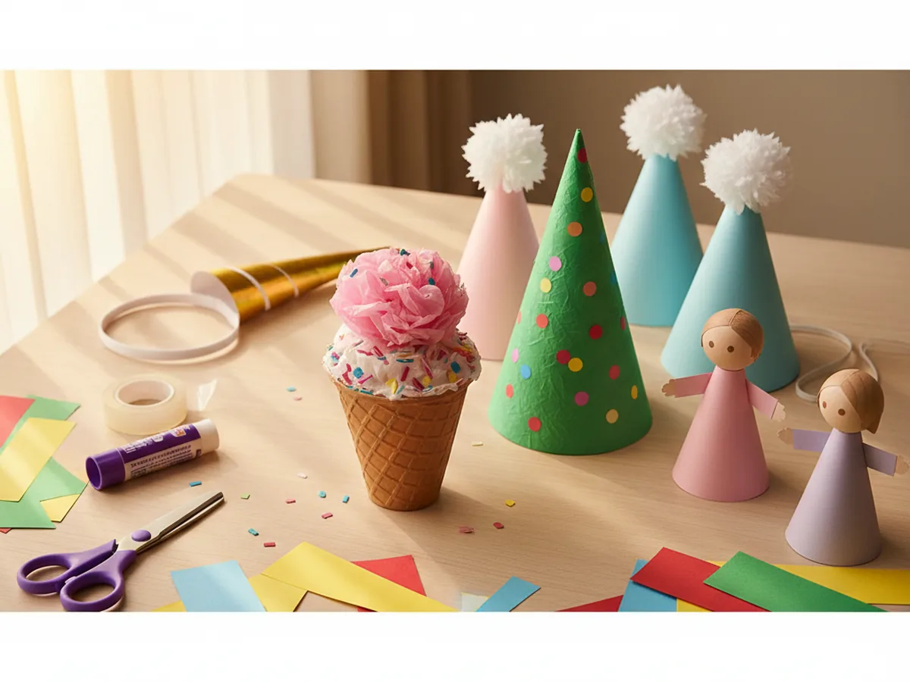
There is something quietly magical about rolling a flat piece of paper into a cone and watching a child's eyes light up at what it can become. One simple shape turns into an ice cream cone, a wizard hat, a little gnome, a tiny rocket. These paper cones for crafts are some of the easiest building blocks you can offer a beginner crafter, and the finished results always feel sweet enough to keep on the shelf. 🎨
This list gathers 20 cozy paper cones for crafts ideas that work for a quiet afternoon at home, a rainy day, a birthday party, or a small holiday craft session. Each one uses simple supplies, takes less than an hour, and gives you a finished piece your child will want to show off. Pick the one that fits today's mood, grab a sheet of paper, and turn a small moment into a happy memory together.
What You'll Need
Most of these paper cone crafts use the same friendly supply drawer, so one quick gather and you are set for almost every idea on the list.
- Crayola Construction Paper 240 Count, a generous rainbow pack with every color you need for cones.
- Neenah Bright White Cardstock 100 Sheets, sturdy paper that holds a cone shape beautifully without flopping.
- Elmer's Disappearing Purple Glue Sticks 6-Pack, mess-free sticks that show kids exactly where they spread glue.
- Fiskars 5 inch Blunt-Tip Kids Scissors 3-Pack, safe and easy for little hands to use.
- Crayola Ultra Clean Washable Markers 10 Count, bright colors that wash off skin and clothes easily.
- Scotch Magic Tape 3-Pack with Dispenser, handy for sealing every cone closed neatly.
- Pipe Cleaners 100 Pack Assorted Colors, perfect for hat straps, antennae, fairy arms, and decorations.
- Offray Assorted Craft Ribbon 24 Spools, sweet ribbons for trims, bows, and hanging loops.
- A pencil, a ruler, and a small bowl or plate to trace circles for clean cone shapes.
20 Sweet Paper Cone Craft Ideas to Make with Your Kids
1. Paper Cone Ice Cream Treats
Roll a piece of brown or tan cardstock into a small cone, then crinkle a scoop of colored tissue paper on top for the ice cream. Add tiny paper sprinkles in marker dots or sticker shapes for a fun finishing touch. These cheery paper cones for crafts look adorable lined up on a windowsill. They are usually the very first idea a child wants to try.
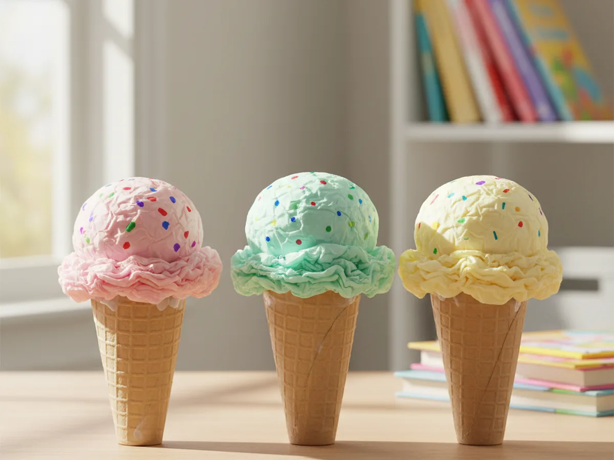
2. Paper Cone Christmas Trees
Roll green construction paper into a tall cone and tape it closed. Let your child glue on little paper circles as ornaments and a small star at the top. A short row of these mini trees becomes a sweet holiday centerpiece. This is one of the most festive paper cone crafts for the weeks leading up to Christmas.
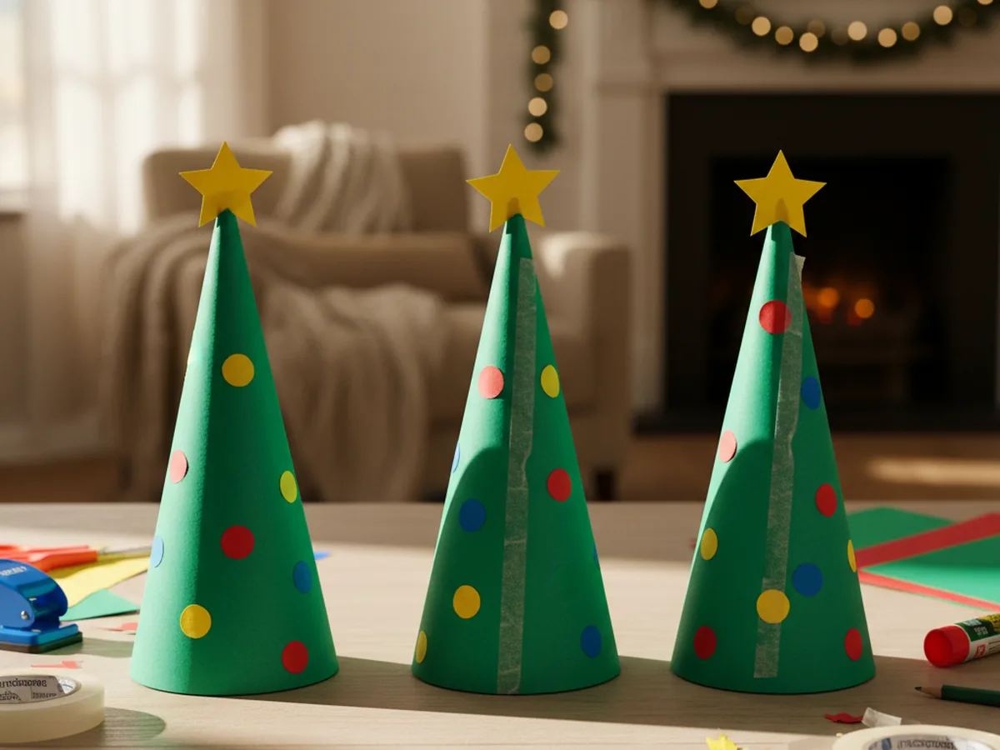
3. Paper Cone Birthday Party Hats
Roll a sheet of brightly colored cardstock into a cone wide enough to sit on a child's head and staple a thin elastic or ribbon under the chin. Decorate the hat with paper dots, stars, or a fluffy tissue paper pom-pom on top. These are easy to make in five minutes and instantly turn any afternoon snack into a tiny celebration. 🎂
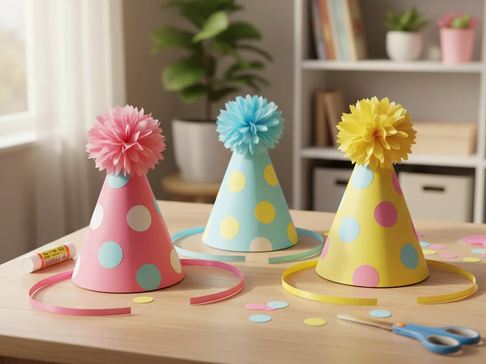
4. Paper Cone Unicorn Horn Headband
Roll a small piece of gold or pearl cardstock into a short narrow cone and tape it onto a fabric or paper headband. Add a little fringe of tissue paper mane behind the horn for extra magic. This is one of the most loved paper cones for crafts ideas for kids who adore dress-up. It transforms any quiet afternoon into a sparkly unicorn parade.
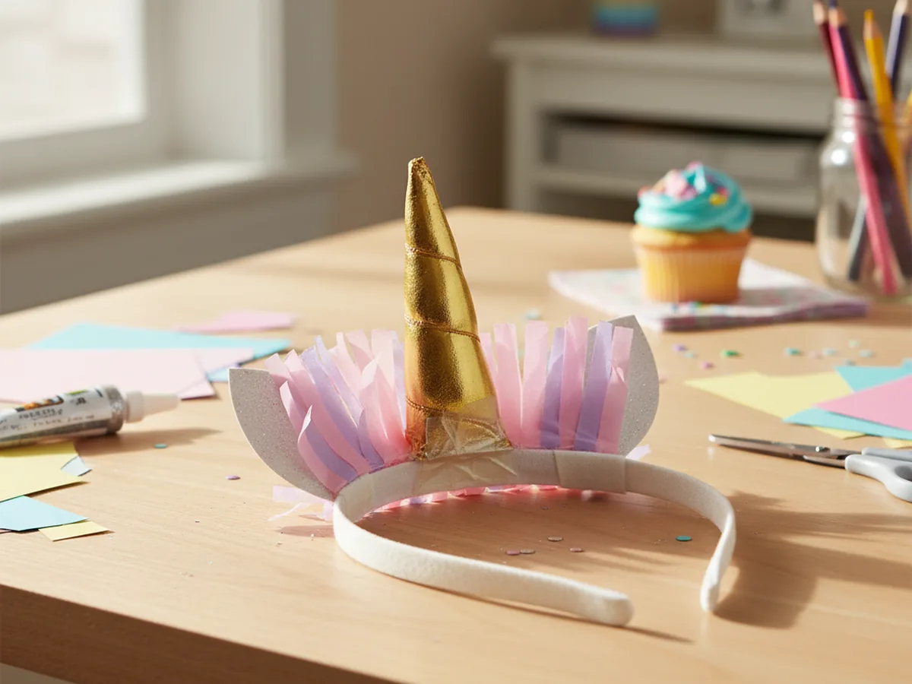
5. Paper Cone Witch Hats
Roll a piece of black cardstock into a tall pointy cone and glue it onto a flat black paper circle to form the wide hat brim. Wrap an orange or purple paper band around the base of the cone and add a paper buckle. These mini witch hats are darling Halloween paper cone crafts for table decor, or they can be sized up to wear.
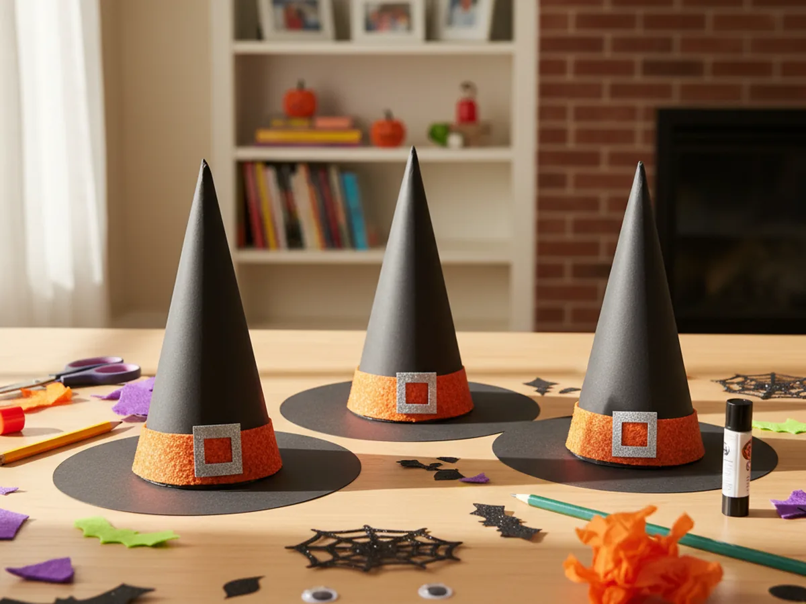
6. Paper Cone Princess Crown
Roll pastel pink or lavender cardstock into a tall slim cone and trim the top into soft scallops or a curly tip. Let your child add little stickers, gem dots, and a long strip of tulle or ribbon trailing from the top point. This sweet paper cone crown turns regular play into a real royal moment. It also makes a beautiful birthday photo prop.
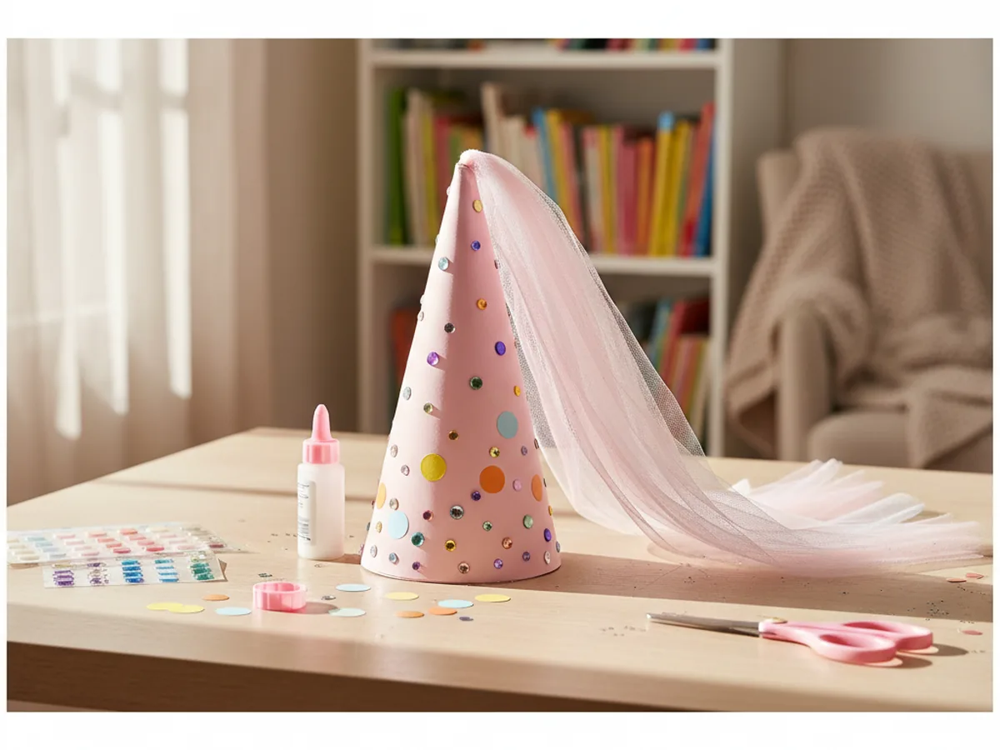
7. Paper Cone Easter Carrots
Roll a sheet of orange construction paper into a narrow cone and tuck a small bunch of green tissue paper fringe into the open top to form leafy carrot tops. Tape the cone closed and trim the wide end neatly. These adorable spring paper cone crafts are sweet little Easter table decorations or surprise treat holders for the bunny hunt.
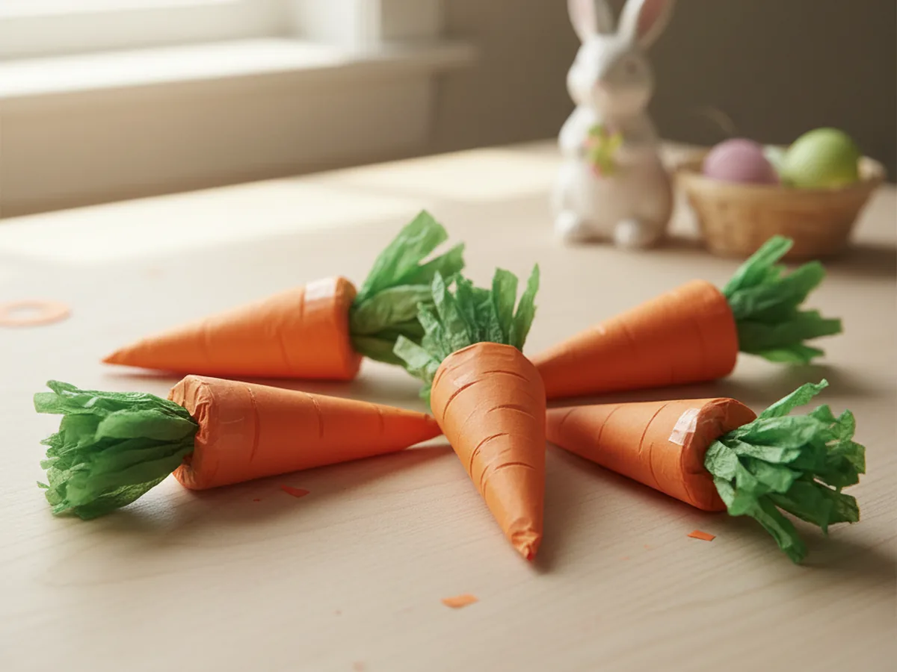
8. Paper Cone Rocket Ships
Tape a small silver or white paper cone to the top of a paper towel tube to form the nose of a rocket. Add cardstock fin shapes at the bottom and a circle window in the middle. Let your child decorate with marker stars and stripes. This is one of the most exciting paper cones for crafts projects for little space lovers. 🚀
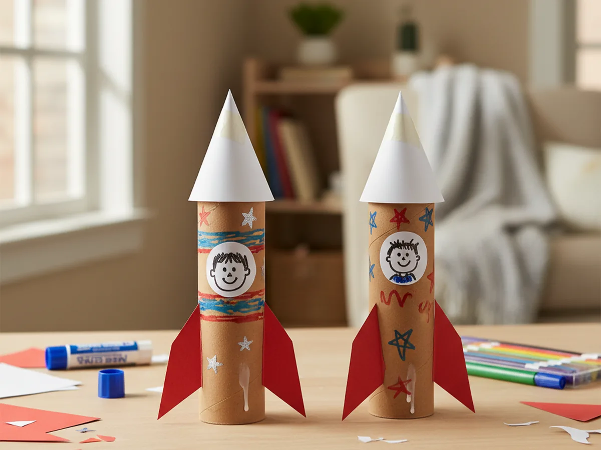
9. Paper Cone Garden Gnomes
Roll a piece of red or blue cardstock into a small cone for the gnome's hat and glue it onto a beige paper cone body. Add a fluffy cotton ball beard and a tiny round nose where the beard meets the hat. These chubby paper cone gnomes bring a storybook feel to any windowsill and are wonderfully calming to make together.
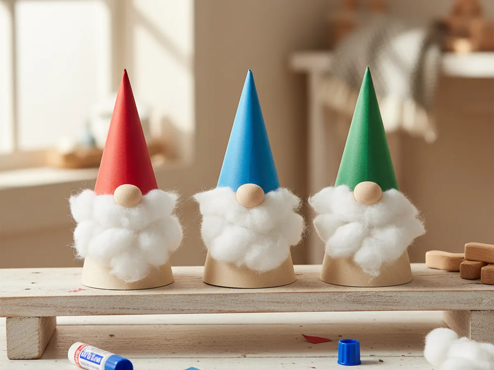
10. Paper Cone Pencil Holders
Roll a sheet of patterned cardstock into a wider cone and tape it inside a small flat paper plate or cardstock circle base. Trim the top edge if needed so it stands up evenly. Slip pencils, markers, or paint brushes inside. This little desk paper cone holder is a sweet handmade gift for grandparents or a teacher.
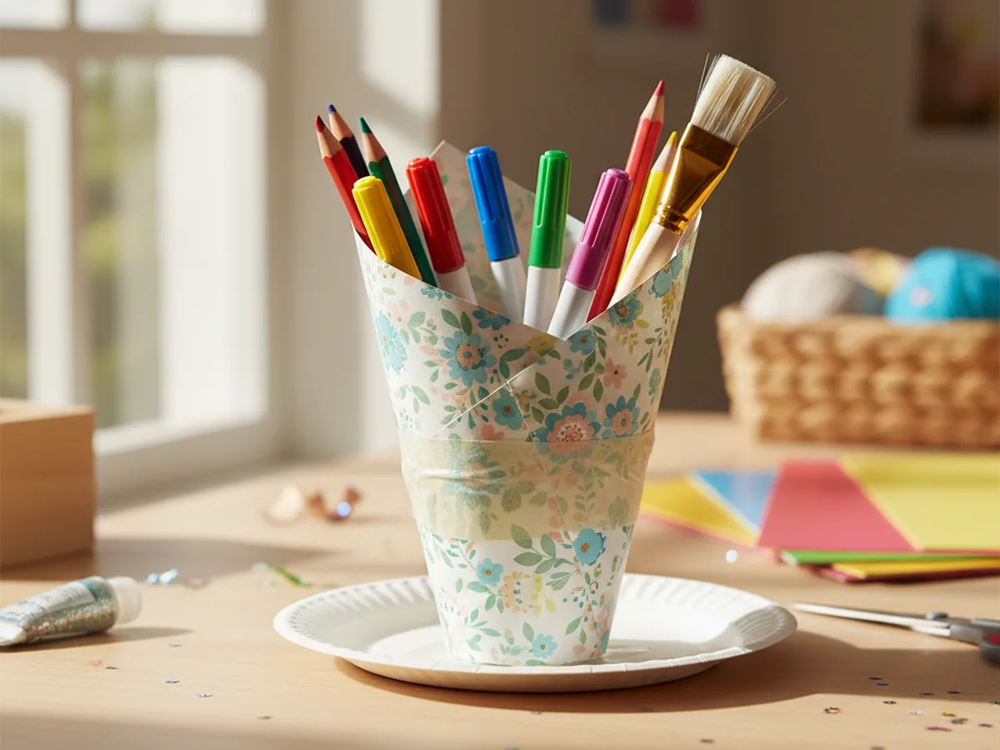
11. Paper Cone Candy Treat Cups
Roll bright cardstock into small open cones and seal them with a piece of tape. Add a thin ribbon handle taped near the rim so the cone hangs upright. Fill each one with a few small candies or popcorn. These cheerful paper cone treat cups are perfect for birthday parties, valentines, or a sweet after-school surprise.
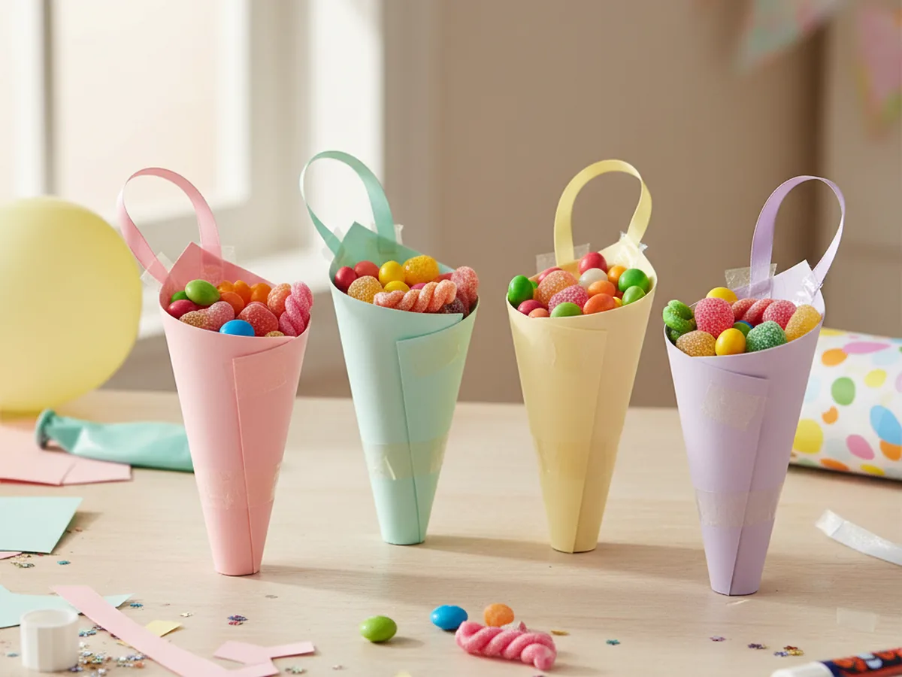
12. Paper Cone Megaphone Toy
Roll a piece of sturdy cardstock into a wider cone with a small opening at the narrow end. Tape it well so it holds its shape during play. Let your child decorate with marker stripes, dots, or their name. This pretend paper cone megaphone is endless fun for backyard cheering and silly announcements indoors.
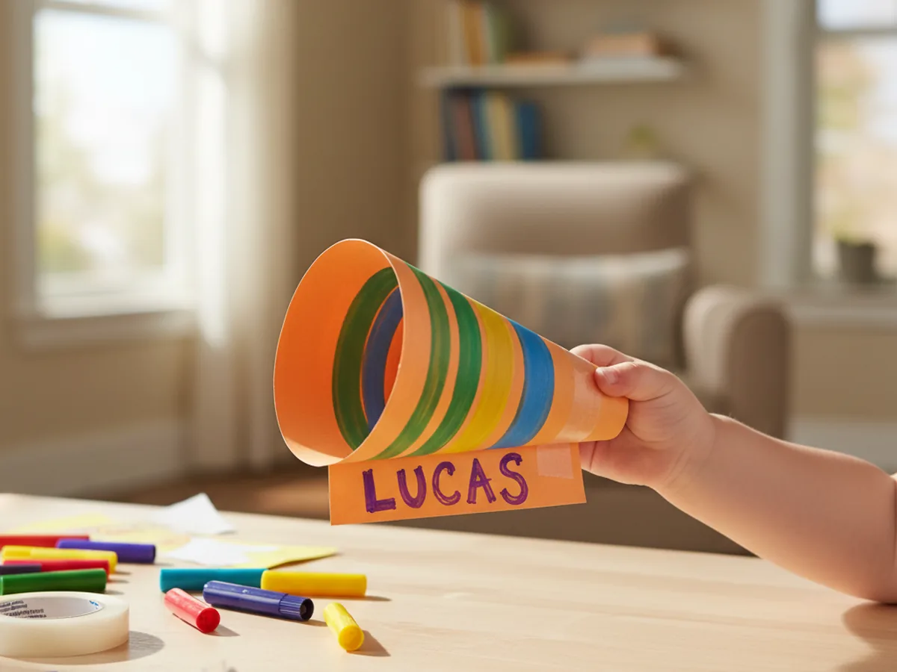
13. Paper Cone Fairy Dolls
Make a slim pastel cone for the fairy's dress and glue a small wooden bead or paper circle on top for the head. Add tiny paper wings on the back and a string of pipe cleaner for the arms. These delicate paper cone fairy dolls are charming to display on a shelf or hang on a thread. They feel like a real little keepsake when finished.
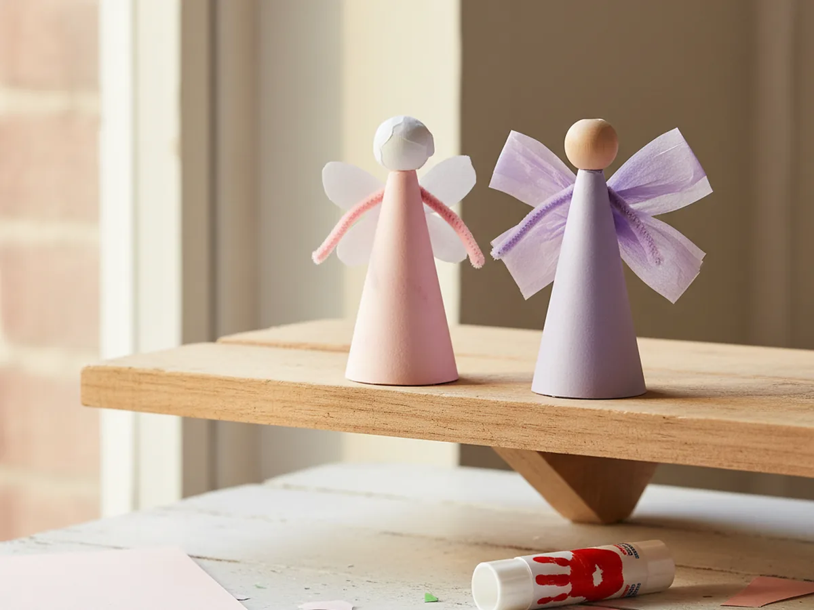
14. Paper Cone Christmas Ornaments
Roll small cones from metallic or patterned paper and add a loop of thin ribbon at the top for hanging. Decorate with tiny paper snowflakes or simple marker doodles. These light little paper cone ornaments look beautiful clustered on a tree or strung along a garland. They are quick enough to make a whole batch in one afternoon.
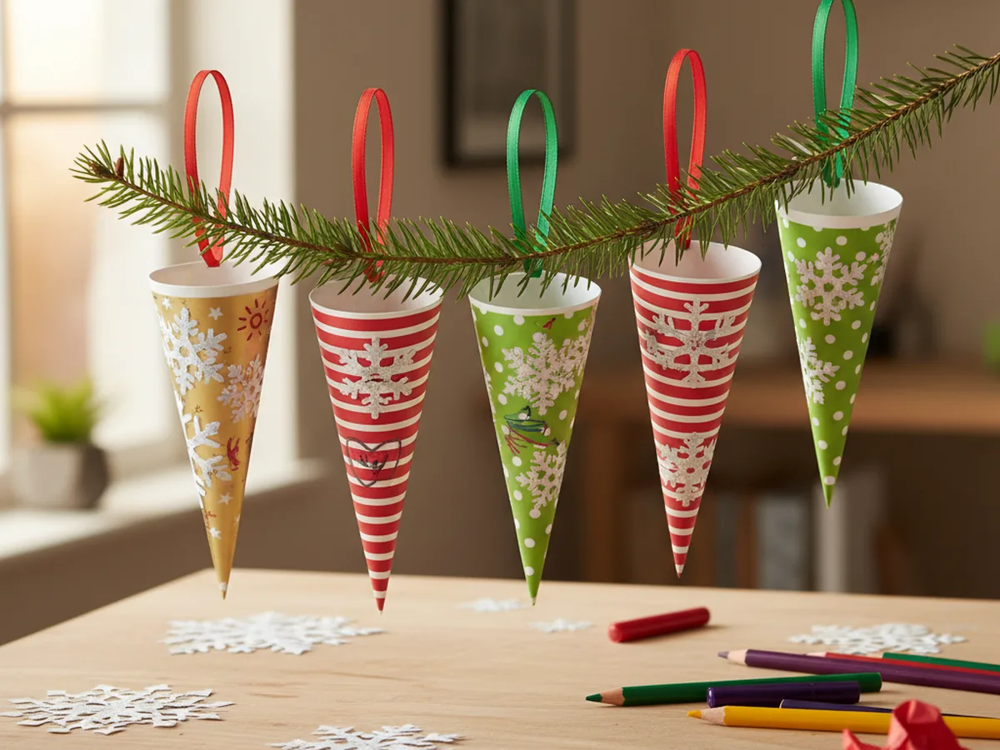
15. Paper Cone Volcano Model
Roll brown cardstock into a wide cone with the tip cut off to create a volcano shape and tape it onto a paper plate base. Let your child paint orange and red tissue paper lava down the sides and crumple a strip of yellow tissue inside the opening. This is one of the most playful paper cone crafts for kids who love a small science moment with their craft.
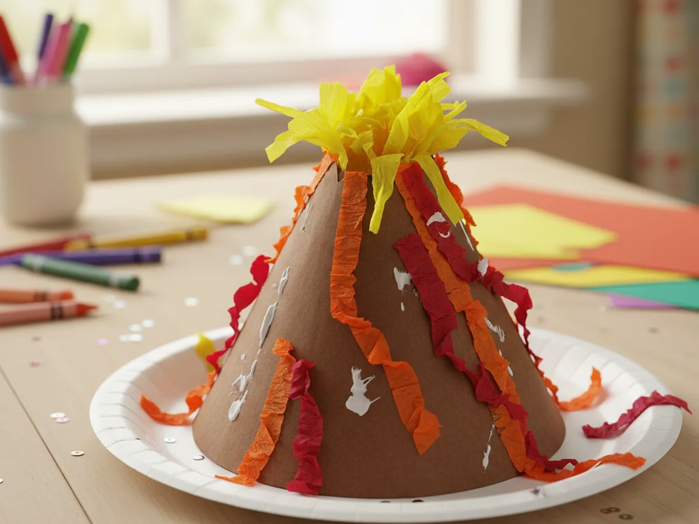
16. Paper Cone Bird Beak Mask
Roll a small yellow or orange paper cone for the beak and tape it onto a feathered paper bird mask shape with elastic ear straps. Let your child decorate with feathers or paper feather cutouts around the edges. This paper cone bird mask is perfect for imaginative role play and pretend backyard adventures.
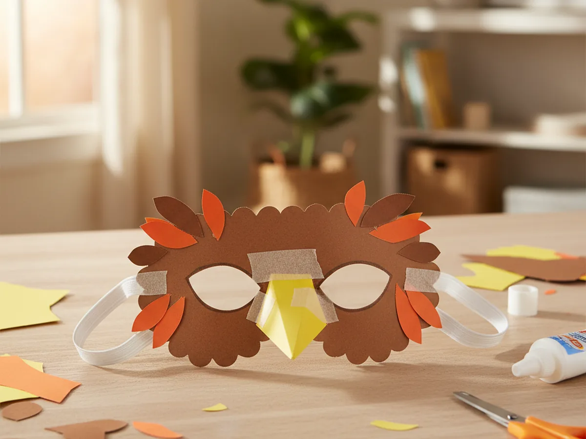
17. Paper Cone Hanging Lanterns
Roll cardstock cones in soft colors and punch small star or moon shapes out of the sides so light can peek through. Add a thin ribbon at the closed point to hang them. Strung along a window or above a bed, these dreamy paper cone lanterns bring a cozy bedtime feel. They are quiet and soothing to make on a sleepy afternoon.
18. Paper Cone Castle Turrets
Cut crenellated rectangles from grey or stone-colored paper to form castle towers and top each one with a small triangle cone in a bright cardstock color. Cluster three or four towers together to build a tiny fairy-tale castle scene. These charming paper cone castle turrets work beautifully on a shelf, in a small-world play setup, or as a story-time backdrop.
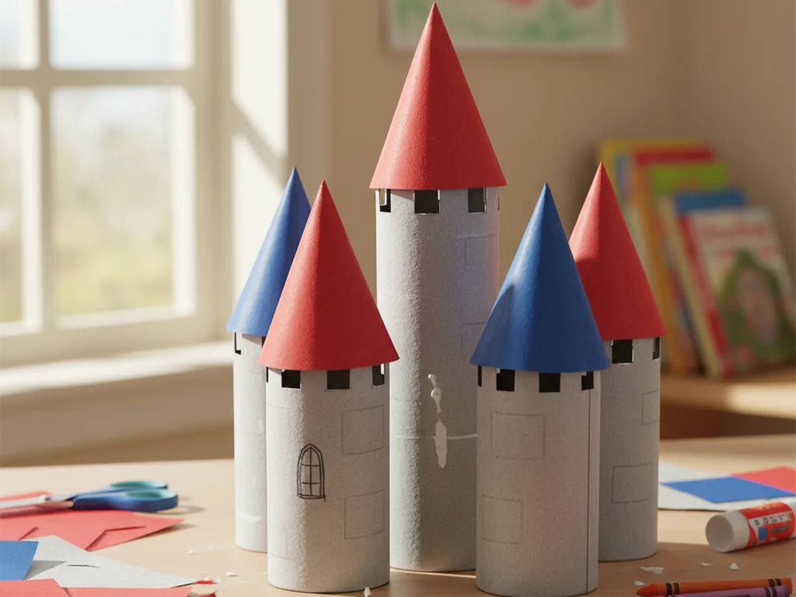
19. Paper Cone Mini Pumpkins
Roll short squat cones from orange cardstock and pinch the tip down to form a stubby pumpkin top. Glue a small green paper stem and a curly green pipe cleaner vine at the top. A row of these mini paper cone pumpkins looks beautifully cozy on a fall mantel or table runner. Kids love how each one comes out slightly different.
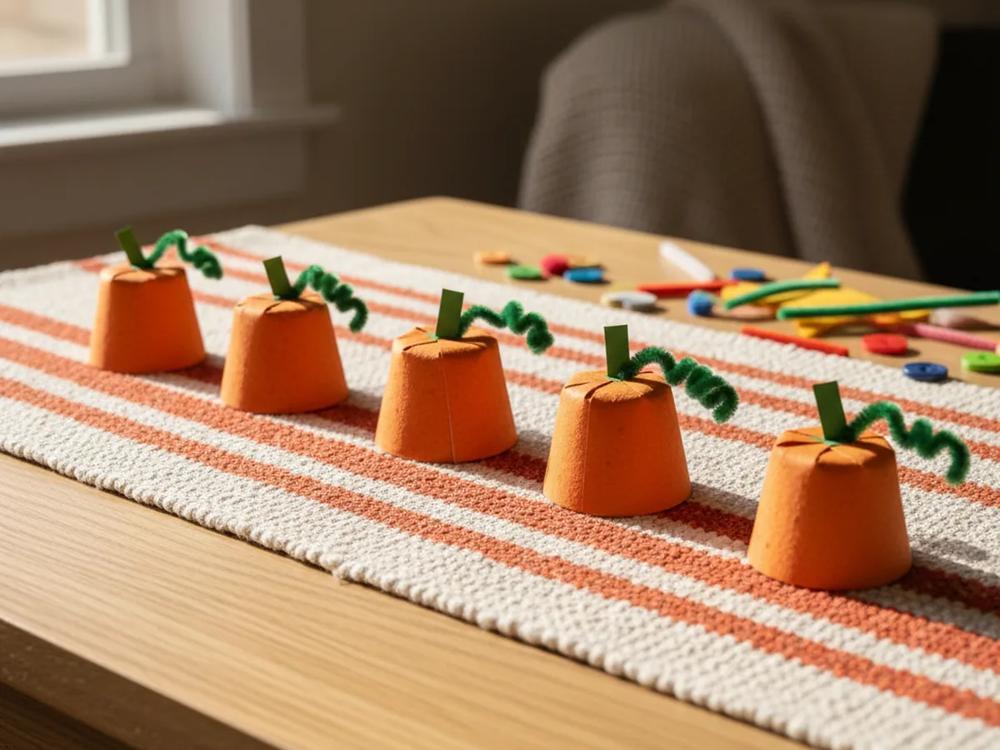
20. Paper Cone Snowmen
Roll white cardstock into a short wide cone for the snowman's body and add a small black paper top hat at the tip. Glue on two paper button dots, a tiny orange triangle nose, and a marker-drawn smile. These cheerful paper cone snowmen bring a snowy storybook feel to a winter mantel. They are sweet to line up along a window even when it is not snowing outside. ❄️
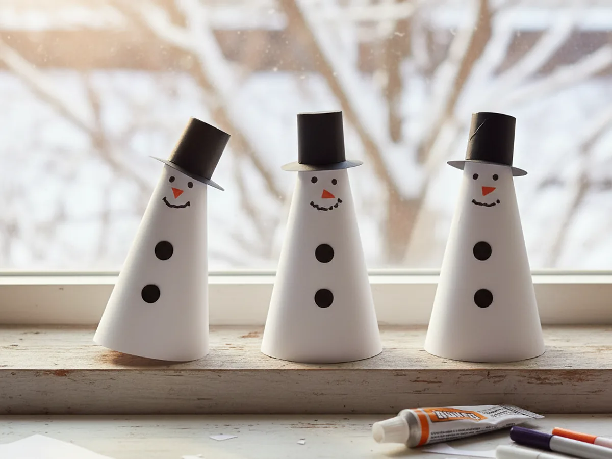
Final Thoughts
The sweetest part about paper cones for crafts is how forgiving and how flexible one little shape can be. A single rolled piece of paper holds the magic of an ice cream cone, a princess hat, a fairy dress, or a tiny holiday tree. The cleanup is quick, the supplies are gentle, and the finished pieces are cute enough to display proudly around the house.
Pick one idea that fits today's mood, gather a few sheets of paper, and let your child lead the decorating. The cones are simple, but the smiles and the slow afternoon together are the real keepsake every time.
More Crafts You'll Love
If your kids enjoy rolling and shaping paper, these two cozy projects pair wonderfully with anything on this list.
Happy crafting, and enjoy every little paper cone moment you roll up together.